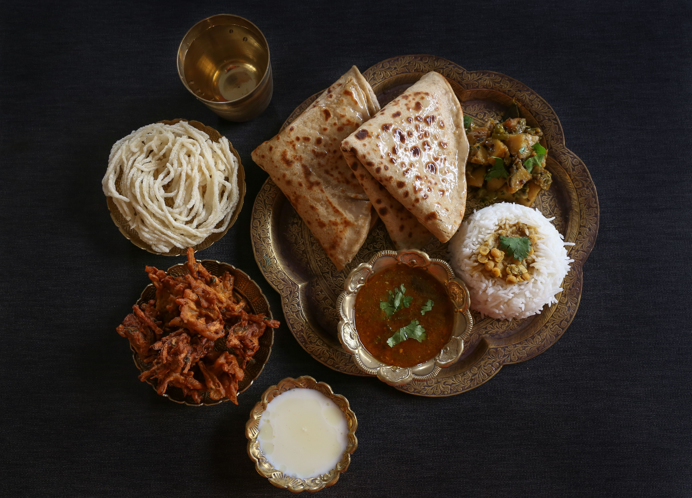
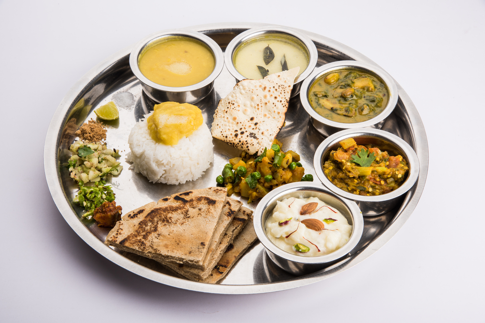
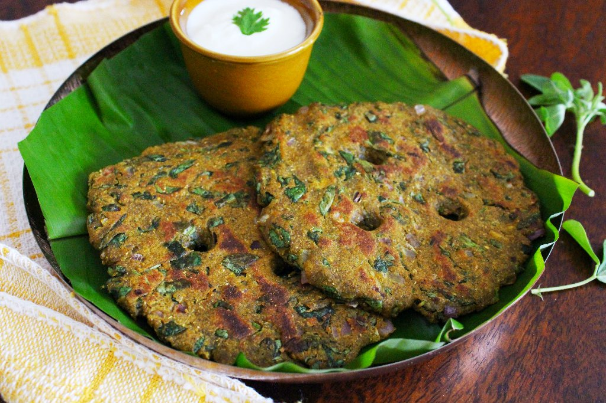
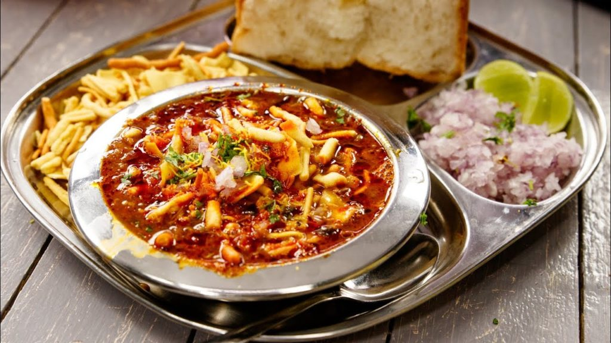
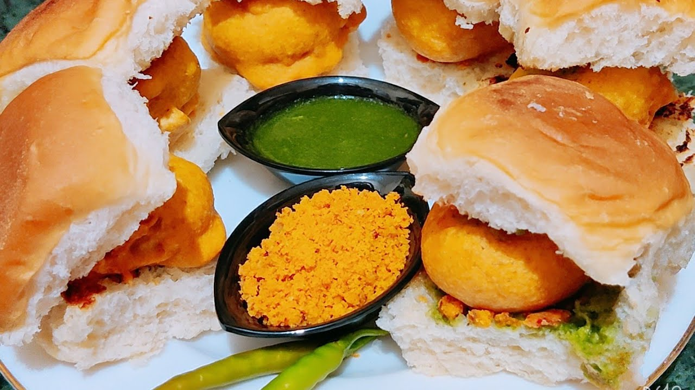
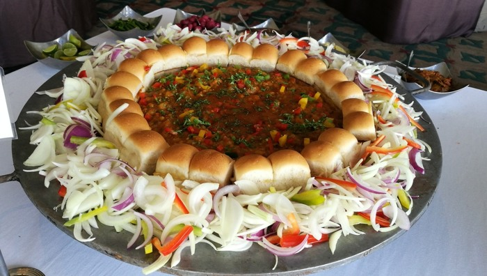

---Best Food ---
---Vegetarian Food---

Puran poli or pooran poli is a traditional Indian sweet (Maharashtrian) made using whole wheat flour dough stuffed with a sweet lentil filling.
Serve it with a dollop of ghee and milk on the side for a delicious breakfast, snack, or dessert.

Amchi Maharashtra food is incomplete without this dish which has come to be synonymous to the state! Fresh and thick slices of bread, smothered in butter served with a delicious mix of moderately spiced vegetables.
This lip-smacking dish has won the heart of every Indian!

In Maharashtrian homes thalipeeth bhajni is made in large amounts and stored, which is then later used to make thalipeeth.
Thalipeeth bhajni is multigrain flour Made with whole grains, millets and spices.

Misal Pav is as hearty and rustic as you’ll find. It’s not one simple dish but an amalgam of unique foods.
Almost like a meal prep food but one that brings you a blast of flavors from hot to tangy. This 100-year-old street food with its variations is popular in Maharashtra. Misal Pav is one of the few unadorned street foods that have made the leap from hand carts and factory canteens to fast food joints and fine dine restaurants.

Vada pav is a savory dinner roll stuffed with fried mashed and spiced potato fritters. It is a popular vegan street food snack eaten in Mumbai and rest of Maharashtra. This dish is full of flavors and various textures!

Pav Bhaji is a fast food dish from Mumbai (Bombay), India, consisting of a vegetable curry (bhaji) cooked in tomato gravy and served with a soft bread roll (pav). While Bhaji is a traditional Indian name for a vegetable dish, the Pav or Pao was the Portuguese word for bread, which was introduced by them during their brief presence in Mumbai around the mid-1500s.